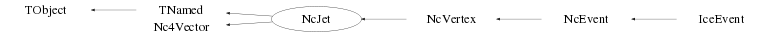

class NcJet: public TNamed, public Nc4Vector
Class NcJet Creation and investigation of a jet of particle tracks. An NcJet can be constructed by adding NcTracks. To provide maximal flexibility to the user, two modes of track storage are provided by means of the memberfunction SetTrackCopy(). a) SetTrackCopy(0) (which is the default). Only the pointers of the 'added' tracks are stored. This mode is typically used by making jet studies based on a fixed list of tracks which stays under user control or is contained for instance in an NcEvent. In this way the NcJet just represents a 'logical structure' for the physics analysis which can be embedded in e.g. an NcEvent or NcVertex. Note : Modifications made to the original tracks also affect the NcTrack objects which are stored in the NcJet. b) SetTrackCopy(1). Of every 'added' track a private copy will be made of which the pointer will be stored. In this way the NcJet represents an entity on its own and modifications made to the original tracks do not affect the NcTrack objects which are stored in the NcJet. This mode will allow 'adding' many different NcTracks into an NcJet by creating only one NcTrack instance in the main programme and using the NcTrack::Reset() and NcTrack parameter setting memberfunctions. See also the documentation provided for the memberfunction SetOwner(). Coding example to make 2 jets j1 and j2. j1 contains the NcTracks t1 and t2 j2 contains 10 different NcTracks via tx NcTrack t1,t2; ... // code to fill the NcTrack data NcJet j1(); j1.AddTrack(t1); j1.AddTrack(t2); NcJet j2(); j2.SetTrackCopy(1); NcTrack* tx=new NcTrack(); for (Int_t i=0; i<10; i++) { ... // code to set momentum etc... of the track tx j2.AddTrack(tx); tx->Reset(); } j1.Data(); j2.Data("sph"); Float_t e1=j1.GetEnergy(); Float_t pnorm=j1->GetMomentum(); Nc3Vector p=j1->Get3Momentum(); Float_t m=j1.GetInvmass(); Int_t ntk=j1.GetNtracks(); NcTrack* tj=j1.GetTrack(1); delete tx; Note : By default all quantities are in GeV, GeV/c or GeV/c**2 but the user can indicate the usage of a different scale for the energy-momentum units via the SetEscale() memberfunction. The actual energy-momentum unit scale can be obtained via the GetEscale() memberfunction. --- Author: Nick van Eijndhoven 10-jul-1997 Utrecht University - Modified: NvE $Date: 2016-05-19 20:01:23 +0200 (Thu, 19 May 2016) $ NCFS
Function Members (Methods)
public:
| NcJet() | |
| NcJet(Int_t n) | |
| NcJet(const NcJet& j) | |
| virtual | ~NcJet() |
| void | TObject::AbstractMethod(const char* method) const |
| void | AddTrack(NcTrack& t) |
| void | AddTrack(NcTrack* t) |
| virtual void | TObject::AppendPad(Option_t* option = "") |
| virtual void | TObject::Browse(TBrowser* b) |
| static TClass* | Class() |
| virtual const char* | TObject::ClassName() const |
| virtual void | TNamed::Clear(Option_t* option = "") |
| virtual TObject* | Clone(const char* name = "") const |
| virtual Int_t | TNamed::Compare(const TObject* obj) const |
| virtual void | TNamed::Copy(TObject& named) const |
| virtual void | Data(TString f = "car", TString u = "rad") |
| virtual void | TObject::Delete(Option_t* option = "")MENU |
| virtual Int_t | TObject::DistancetoPrimitive(Int_t px, Int_t py) |
| Double_t | Nc4Vector::Dot(Nc4Vector& q) |
| virtual void | TObject::Draw(Option_t* option = "") |
| virtual void | TObject::DrawClass() constMENU |
| virtual TObject* | TObject::DrawClone(Option_t* option = "") constMENU |
| virtual void | TObject::Dump() constMENU |
| virtual void | TObject::Error(const char* method, const char* msgfmt) const |
| virtual void | TObject::Execute(const char* method, const char* params, Int_t* error = 0) |
| virtual void | TObject::Execute(TMethod* method, TObjArray* params, Int_t* error = 0) |
| virtual void | TObject::ExecuteEvent(Int_t event, Int_t px, Int_t py) |
| virtual void | TObject::Fatal(const char* method, const char* msgfmt) const |
| virtual void | TNamed::FillBuffer(char*& buffer) |
| virtual TObject* | TObject::FindObject(const char* name) const |
| virtual TObject* | TObject::FindObject(const TObject* obj) const |
| Nc3Vector | Get3Momentum(Float_t scale = -1) const |
| Nc3Vector | Nc4Vector::Get3Vector() const |
| Double_t | Nc4Vector::GetBeta() |
| Nc3Vector | Nc4Vector::GetBetaVector() const |
| Float_t | GetCharge() const |
| Double_t | GetDistance(NcPosition* p, Float_t scale = -1) |
| Double_t | GetDistance(NcPosition& p, Float_t scale = -1) |
| Double_t | GetDistance(NcTrack* t, Float_t scale = -1) |
| Double_t | GetDistance(NcTrack& t, Float_t scale = -1) |
| Double_t | GetDistance(NcJet* j, Float_t scale = -1) |
| Double_t | GetDistance(NcJet& j, Float_t scale = -1) |
| virtual Option_t* | TObject::GetDrawOption() const |
| static Long_t | TObject::GetDtorOnly() |
| Double_t | GetEl(Float_t scale = -1) |
| Double_t | GetEnergy(Float_t scale = -1) |
| void | Nc4Vector::GetErrors(Double_t* v, TString f, TString u = "rad") |
| void | Nc4Vector::GetErrors(Float_t* v, TString f, TString u = "rad") |
| Float_t | GetEscale() const |
| Double_t | GetEt(Float_t scale = -1) |
| Double_t | Nc4Vector::GetGamma() |
| virtual const char* | TObject::GetIconName() const |
| Int_t | GetId() const |
| NcTrack* | GetIdTrack(Int_t id) const |
| Double_t | Nc4Vector::GetInvariant() |
| Double_t | GetInvmass(Float_t scale = -1) |
| Double_t | GetMomentum(Float_t scale = -1) |
| Double_t | GetMt(Float_t scale = -1) |
| virtual const char* | TNamed::GetName() const |
| Int_t | GetNsignals(TString classname = "TObject", Int_t par = 0) const |
| Int_t | GetNtracks(TString name, Int_t mode = 0) |
| Int_t | GetNtracks(Int_t idmode = 0, Int_t chmode = 2, Int_t pcode = 0) |
| virtual char* | TObject::GetObjectInfo(Int_t px, Int_t py) const |
| static Bool_t | TObject::GetObjectStat() |
| virtual Double_t | Nc4Vector::GetOpeningAngle(Nc4Vector& q, TString u = "rad") |
| virtual Double_t | Nc4Vector::GetOpeningAngle(Nc3Vector& q, TString u = "rad") |
| virtual Option_t* | TObject::GetOption() const |
| Double_t | GetPl(Float_t scale = -1) |
| Double_t | Nc4Vector::GetPseudoRapidity() |
| Double_t | GetPt(Float_t scale = -1) |
| Double_t | GetRapidity() |
| NcPosition* | GetReferencePoint() |
| Double_t | Nc4Vector::GetResultError() const |
| Double_t | Nc4Vector::GetScalar() |
| Int_t | Nc4Vector::GetScalarFlag() const |
| TObjArray* | GetSignals(TString classname, Int_t par = 0, TObjArray* signals = 0) |
| Double_t | GetSignalValue(TString classname, TString varname, Int_t mode = 0, Int_t par = 2) |
| virtual const char* | TNamed::GetTitle() const |
| NcTrack* | GetTrack(Int_t i) const |
| Int_t | GetTrackCopy() const |
| TObjArray* | GetTracks(TString name, Int_t mode = 0, TObjArray* tracks = 0) |
| TObjArray* | GetTracks(Int_t idmode = 0, Int_t chmode = 2, Int_t pcode = 0, TObjArray* tracks = 0) |
| virtual UInt_t | TObject::GetUniqueID() const |
| NcSignal* | Nc4Vector::GetUserData() const |
| Nc3Vector | Nc4Vector::GetVecLong() const |
| void | Nc4Vector::GetVector(Double_t* v, TString f, TString u = "rad") |
| void | Nc4Vector::GetVector(Float_t* v, TString f, TString u = "rad") |
| Nc3Vector | Nc4Vector::GetVecTrans() const |
| Double_t | Nc4Vector::GetX(Int_t i, TString f, TString u = "rad") |
| virtual Bool_t | TObject::HandleTimer(TTimer* timer) |
| Int_t | Nc4Vector::HasErrors() const |
| virtual ULong_t | TNamed::Hash() const |
| Int_t | Nc4Vector::HasVector() const |
| virtual void | TObject::Info(const char* method, const char* msgfmt) const |
| virtual Bool_t | TObject::InheritsFrom(const char* classname) const |
| virtual Bool_t | TObject::InheritsFrom(const TClass* cl) const |
| virtual void | TObject::Inspect() constMENU |
| void | TObject::InvertBit(UInt_t f) |
| virtual TClass* | IsA() const |
| virtual Bool_t | TObject::IsEqual(const TObject* obj) const |
| virtual Bool_t | TObject::IsFolder() const |
| Bool_t | TObject::IsOnHeap() const |
| virtual Bool_t | TNamed::IsSortable() const |
| Bool_t | TObject::IsZombie() const |
| virtual void | List(TString f = "car", TString u = "rad", TObjArray* tracks = 0) |
| virtual void | ListAll(TString f = "car", TString u = "rad", TObjArray* tracks = 0) |
| virtual void | Nc4Vector::Load(Nc4Vector& q) |
| virtual void | TNamed::ls(Option_t* option = "") const |
| void | TObject::MayNotUse(const char* method) const |
| virtual Bool_t | TObject::Notify() |
| void | TObject::Obsolete(const char* method, const char* asOfVers, const char* removedFromVers) const |
| static void | TObject::operator delete(void* ptr) |
| static void | TObject::operator delete(void* ptr, void* vp) |
| static void | TObject::operator delete[](void* ptr) |
| static void | TObject::operator delete[](void* ptr, void* vp) |
| void* | TObject::operator new(size_t sz) |
| void* | TObject::operator new(size_t sz, void* vp) |
| void* | TObject::operator new[](size_t sz) |
| void* | TObject::operator new[](size_t sz, void* vp) |
| Nc4Vector | Nc4Vector::operator*(Double_t s) |
| Nc4Vector& | Nc4Vector::operator*=(Double_t s) |
| Nc4Vector | Nc4Vector::operator+(Nc4Vector& q) |
| Nc4Vector& | Nc4Vector::operator+=(Nc4Vector& q) |
| Nc4Vector | Nc4Vector::operator-(Nc4Vector& q) |
| Nc4Vector& | Nc4Vector::operator-=(Nc4Vector& q) |
| Nc4Vector | Nc4Vector::operator/(Double_t s) |
| Nc4Vector& | Nc4Vector::operator/=(Double_t s) |
| NcJet& | operator=(const NcJet&) |
| virtual void | TObject::Paint(Option_t* option = "") |
| virtual void | TObject::Pop() |
| virtual void | TNamed::Print(Option_t* option = "") const |
| virtual Int_t | TObject::Read(const char* name) |
| virtual void | TObject::RecursiveRemove(TObject* obj) |
| void | RemoveTrack(NcTrack* t) |
| void | RemoveTracks(TString name, Int_t mode = 0) |
| void | RemoveTracks(Int_t idmode = 0, Int_t chmode = 2, Int_t pcode = 0) |
| void | ReplaceTrack(NcTrack* told, NcTrack* tnew) |
| virtual void | Reset() |
| void | TObject::ResetBit(UInt_t f) |
| virtual void | TObject::SaveAs(const char* filename = "", Option_t* option = "") constMENU |
| virtual void | TObject::SavePrimitive(ostream& out, Option_t* option = "") |
| void | Nc4Vector::Set3Vector(Nc3Vector& v) |
| void | Nc4Vector::Set3Vector(Double_t* v, TString f, TString u = "rad") |
| void | Nc4Vector::Set3Vector(Float_t* v, TString f, TString u = "rad") |
| void | Nc4Vector::Set3Vector(Double_t v1, Double_t v2, Double_t v3, TString f, TString u = "rad") |
| void | TObject::SetBit(UInt_t f) |
| void | TObject::SetBit(UInt_t f, Bool_t set) |
| virtual void | TObject::SetDrawOption(Option_t* option = "")MENU |
| static void | TObject::SetDtorOnly(void* obj) |
| void | Nc4Vector::SetErrors(Double_t* v, TString f, TString u = "rad") |
| void | Nc4Vector::SetErrors(Float_t* v, TString f, TString u = "rad") |
| void | Nc4Vector::SetErrors(Double_t e0, Double_t e1, Double_t e2, Double_t e3, TString f, TString u = "rad") |
| void | SetEscale(Float_t scale) |
| void | SetId(Int_t id) |
| void | Nc4Vector::SetInvariant(Double_t v2, Double_t dv2 = 0) |
| void | Nc4Vector::SetInvariantError(Double_t dv2) |
| virtual void | TNamed::SetName(const char* name)MENU |
| virtual void | TNamed::SetNameTitle(const char* name, const char* title) |
| static void | TObject::SetObjectStat(Bool_t stat) |
| virtual void | SetOwner(Bool_t own = kTRUE) |
| void | SetReferencePoint(NcPosition& p) |
| void | Nc4Vector::SetScalar(Double_t v0, Double_t dv0 = 0) |
| void | Nc4Vector::SetScalarError(Double_t dv0) |
| virtual void | TNamed::SetTitle(const char* title = "")MENU |
| void | SetTrackCopy(Int_t j) |
| virtual void | TObject::SetUniqueID(UInt_t uid) |
| void | Nc4Vector::SetUserData(NcSignal* s) |
| void | Nc4Vector::SetUserData(NcSignal& s) |
| void | Nc4Vector::SetVector(Double_t v0, Nc3Vector& v) |
| void | Nc4Vector::SetVector(Double_t* v, TString f, TString u = "rad") |
| void | Nc4Vector::SetVector(Float_t* v, TString f, TString u = "rad") |
| void | Nc4Vector::SetVector(Double_t v0, Double_t v1, Double_t v2, Double_t v3, TString f, TString u = "rad") |
| virtual void | Nc4Vector::SetZero() |
| virtual void | ShowMembers(TMemberInspector&) |
| void | ShowSignals(TString classname, Int_t par = 0, Int_t mode = 1, TString f = "car", TString u = "rad") |
| void | ShowTracks(Int_t mode = 1, TString f = "car", TString u = "rad", TObjArray* tracks = 0) |
| virtual Int_t | TNamed::Sizeof() const |
| TObjArray* | SortTracks(Int_t mode = -1, TObjArray* tracks = 0, TObjArray* ordered = 0) |
| virtual void | Streamer(TBuffer&) |
| void | StreamerNVirtual(TBuffer& ClassDef_StreamerNVirtual_b) |
| virtual void | TObject::SysError(const char* method, const char* msgfmt) const |
| Bool_t | TObject::TestBit(UInt_t f) const |
| Int_t | TObject::TestBits(UInt_t f) const |
| virtual void | TObject::UseCurrentStyle() |
| virtual void | TObject::Warning(const char* method, const char* msgfmt) const |
| virtual Int_t | TObject::Write(const char* name = 0, Int_t option = 0, Int_t bufsize = 0) |
| virtual Int_t | TObject::Write(const char* name = 0, Int_t option = 0, Int_t bufsize = 0) const |
protected:
| void | AddTrack(NcTrack& t, Int_t copy) |
| void | AddTrack(NcTrack* t, Int_t copy) |
| virtual void | TObject::DoError(int level, const char* location, const char* fmt, va_list va) const |
| Double_t | Nc4Vector::GetScaLong() |
| Double_t | Nc4Vector::GetScaTrans() |
| void | Init() |
| void | TObject::MakeZombie() |
| void | RemoveTrack(NcTrack* t, Int_t compress) |
| void | SetNtinit(Int_t n = 2) |
Data Members
public:
| enum TObject::EStatusBits { | kCanDelete | |
| kMustCleanup | ||
| kObjInCanvas | ||
| kIsReferenced | ||
| kHasUUID | ||
| kCannotPick | ||
| kNoContextMenu | ||
| kInvalidObject | ||
| }; | ||
| enum TObject::[unnamed] { | kIsOnHeap | |
| kNotDeleted | ||
| kZombie | ||
| kBitMask | ||
| kSingleKey | ||
| kOverwrite | ||
| kWriteDelete | ||
| }; |
protected:
| Double32_t | Nc4Vector::fDresult | ! The error on the scalar result of an operation (e.g. dotproduct) |
| Double32_t | Nc4Vector::fDv0 | The error on the scalar part |
| Double32_t | Nc4Vector::fDv2 | The error on the Lorentz invariant |
| Float_t | fEscale | The scale of the energy/momentum units of the jet |
| TString | TNamed::fName | object identifier |
| Int_t | fNtinit | The initial max. number of tracks for this jet |
| Int_t | fNtmax | The maximum number of tracks for this Jet |
| Int_t | fNtrk | The number of tracks in the jet |
| Float_t | fQ | The total charge of the jet |
| NcPositionObj* | fRef | The reference-point of the jet |
| Int_t | Nc4Vector::fScalar | Flag denoting scalar mode |
| TObjArray* | fSelected | ! Temp. array to hold user selected or ordered objects |
| TString | TNamed::fTitle | object title |
| Int_t | fTrackCopy | Flag to denote creation of private copies in fTracks |
| TObjArray* | fTracks | Array to hold the pointers to the tracks of the jet |
| NcSignal* | Nc4Vector::fUser | NcSignal object containing user data |
| Int_t | fUserId | The user defined identifier |
| Nc3Vector | Nc4Vector::fV | The 3-vector part |
| Double32_t | Nc4Vector::fV0 | The scalar part |
| Double32_t | Nc4Vector::fV2 | The Lorentz invariant (v^i*v_i) |
Class Charts
{kind=link}
{kind=link}
{kind=link}
{kind=link}

Function documentation
NcJet()
Default constructor All variables initialised to 0 Initial maximum number of tracks is set to the default value
void SetOwner(Bool_t own = kTRUE)
Set ownership of all added objects. The default parameter is own=kTRUE. Invokation of this memberfunction also sets all the copy modes (e.g. TrackCopy & co.) according to the value of own. This function (with own=kTRUE) is particularly useful when reading data from a tree/file, since Reset() will then actually remove all the added objects from memory irrespective of the copy mode settings during the tree/file creation process. In this way it provides a nice way of preventing possible memory leaks in the reading/analysis process. In addition this memberfunction can also be used as a shortcut to set all copy modes in one go during a tree/file creation process. However, in this case the user has to take care to only set/change the ownership (and copy mode) for empty objects (e.g. newly created objects or after invokation of the Reset() memberfunction) otherwise it will very likely result in inconsistent destructor behaviour.
void Reset()
Reset all variables to 0 The max. number of tracks is set to the initial value again Note : The scale for the energy/momentum units will not be changed.
void AddTrack(NcTrack& t)
Add a track to the jet. In case the maximum number of tracks has been reached space will be extended to hold an additional amount of tracks as was initially reserved. See SetTrackCopy() to tailor the functionality of the stored structures. Notes : In case a private copy is made, this is performed via the Clone() memberfunction. All NcTrack and derived classes have the default TObject::Clone() memberfunction. However, derived classes generally contain an internal data structure which may include pointers to other objects. Therefore it is recommended to provide for all derived classes a specific copy constructor and override the default Clone() memberfunction using this copy constructor. An example for this may be seen from NcTrack. In case NO private copy is made, a check will be performed if this specific track is already present in the jet. If this is the case, no action is performed to prevent multiple additions of the same track.
void AddTrack(NcTrack& t, Int_t copy)
Internal memberfunction to actually add a track to the jet. In case the maximum number of tracks has been reached space will be extended to hold an additional amount of tracks as was initially reserved. If copy=0 NO copy of the track will be made, irrespective of the setting of the TrackCopy flag. This allows a proper treatment of automatically generated connecting tracks between vertices. In case NO copy of the track is made, a check will be performed if this specific track is already present in the jet. If this is the case, no action is performed to prevent multiple additions of the same track. Note : In case a private copy is made, this is performed via the Clone() memberfunction.
void Data(TString f = "car", TString u = "rad")
Provide jet information within the coordinate frame f The string argument "u" allows to choose between different angular units in case e.g. a spherical frame is selected. u = "rad" : angles provided in radians "deg" : angles provided in degrees The defaults are f="car" and u="rad".
void List(TString f = "car", TString u = "rad", TObjArray* tracks = 0)
Provide jet and primary track information within the coordinate frame f The string argument "u" allows to choose between different angular units in case e.g. a spherical frame is selected. u = "rad" : angles provided in radians "deg" : angles provided in degrees The defaults are f="car" and u="rad". In case the user provides the array "tracks" with selected track pointers, all tracks from that user array will be shown. In case tracks=0, all the available tracks from this jet will be shown. The default is tracks=0.
void ListAll(TString f = "car", TString u = "rad", TObjArray* tracks = 0)
Provide jet and prim.+sec. track information within the coordinate frame f The string argument "u" allows to choose between different angular units in case e.g. a spherical frame is selected. u = "rad" : angles provided in radians "deg" : angles provided in degrees The defaults are f="car" and u="rad". In case the user provides the array "tracks" with selected track pointers, all tracks from that user array will be shown. In case tracks=0, all the available tracks from this jet will be shown. The default is tracks=0.
Int_t GetNtracks(Int_t idmode = 0, Int_t chmode = 2, Int_t pcode = 0)
Provide the number of user selected tracks in this jet based on the idmode, chmode and pcode selections as specified by the user. For specification of the selection parameters see GetTracks(). The default parameters correspond to no selection, which implies that invokation of GetNtracks() just returns the total number of tracks registered in this jet. Note : In case certain selections are specified, this function invokes GetTracks(idmode,chmode,pcode) to determine the number of tracks corresponding to the selections. In case of many invokations of this memberfunction, invokation of GetTracks(idmode,chmode,pcode,tracks) with a user provided array "tracks" and subsequently invoking GetEntries() of the array might be slightly faster.
Int_t GetNtracks(TString name, Int_t mode = 0)
Provide the number of tracks with the specified name. If name="*" all tracks will be provided, irrespective of the value of "mode". mode = 0 : The provided name should exactly match the trackname 1 : The provided name should be part of the trackname The default value is mode=0. Note : In case of many invokations of this memberfunction, invokation of GetTracks(name,mode,tracks) with a user provided array "tracks" and subsequently invoking GetEntries() of the array might be slightly faster.
Double_t GetEnergy(Float_t scale = -1)
Return the total energy of the jet. By default the energy is returned in the units as it was stored in the jet structure. However, the user can select a different energy unit scale by specification of the scale parameter. The convention is that scale=1 corresponds to GeV, so specification of scale=0.001 will provide the energy in MeV. The error can be obtained by invoking GetResultError() after invokation of GetEnergy().
Double_t GetMomentum(Float_t scale = -1)
Return the value of the total jet 3-momentum By default the momentum is returned in the units as it was stored in the jet structure. However, the user can select a different momentum unit scale by specification of the scale parameter. The convention is that scale=1 corresponds to GeV/c, so specification of scale=0.001 will provide the momentum in MeV/c. The error can be obtained by invoking GetResultError() after invokation of GetMomentum().
Nc3Vector Get3Momentum(Float_t scale = -1) const
Return the the total jet 3-momentum By default the components of the 3-momentum are returned in the units as they were stored in the jet structure. However, the user can select a different momentum unit scale for the components by specification of the scale parameter. The convention is that scale=1 corresponds to GeV/c, so specification of scale=0.001 will provide the 3-momentum in MeV/c.
Double_t GetInvmass(Float_t scale = -1)
Return the invariant mass of the jet. By default the mass is returned in the units as it was stored in the jet structure. However, the user can select a different mass unit scale by specification of the scale parameter. The convention is that scale=1 corresponds to GeV/c**2, so specification of scale=0.001 will provide the invariant mass in MeV/c**2. The error can be obtained by invoking GetResultError() after invokation of GetInvmass().
TObjArray* GetTracks(Int_t idmode = 0, Int_t chmode = 2, Int_t pcode = 0, TObjArray* tracks = 0)
Provide references to user selected tracks based on the idmode, chmode and pcode selections as specified by the user. The following selection combinations are available : idmode = -1 ==> Select tracks with negative user identifier "id" 0 ==> No selection on user identifier 1 ==> Select tracks with positive user identifier "id" chmode = -1 ==> Select tracks with negative charge 0 ==> Select neutral tracks 1 ==> Select tracks with positive charge 2 ==> No selection on charge 3 ==> Select all charged tracks pcode = 0 ==> No selection on particle code X ==> Select tracks with particle code +X or -X This allows selection of both particles and anti-particles in case of PDG particle codes. Selection of either particles or anti-particles can be obtained in combination with the "chmode" selector. Examples : idmode=-1 chmode=0 pcode=0 : Selection of all neutral tracks with negative id. idmode=0 chmode=2 pcode=211 : Selection of all charged pions (PDG convention). idmode=0 chmode=1 pcode=321 : Selection of all positive kaons (PDG convention). The default values are idmode=0 chmode=2 pcode=0 (i.e. no selections applied) and tracks=0. Notes : 1) In case the user has labeled simulated tracks with negative id and reconstructed tracks with positive id, this memberfunction provides easy access to either all simulated or reconstructed tracks. 2) Subsequent invokations of this memberfunction with e.g. chmode=-1 and chmode=1 provides a convenient way to investigate particle pairs with opposite charge (e.g. for invariant mass analysis). 3) In case tracks=0 the selected track pointers are returned via a multi-purpose array, which will be overwritten by subsequent selections (not restricted to track selections). It is recommended to provide a user defined array via the argument "tracks" to omit the danger of overwriting the selection and to allow to use the selected track list amongst other selections. In case a user defined array "tracks" is provided, this memberfunction returns 0 for the return argument.
TObjArray* GetTracks(TString name, Int_t mode = 0, TObjArray* tracks = 0)
Provide references to all tracks with the specified name. If name="*" all tracks will be provided, irrespective of the value of "mode". mode = 0 : The provided name should exactly match the trackname 1 : The provided name should be part of the trackname The default values are mode=0 and tracks=0. Notes : 1) In case the user has labeled reconstructed tracks with the name of the applied reconstruction algorithm, this memberfunction provides easy access to all tracks reconstructed by a certain method. 2) In case tracks=0 the selected track pointers are returned via a multi-purpose array, which will be overwritten by subsequent selections (not restricted to track selections). It is recommended to provide a user defined array via the argument "tracks" to omit the danger of overwriting the selection and to allow to use the selected track list amongst other selections. In case a user defined array "tracks" is provided, this memberfunction returns 0 for the return argument.
void RemoveTrack(NcTrack* t)
Remove the track with the specified reference. In case t=0 no action will be taken.
void RemoveTracks(TString name, Int_t mode = 0)
Remove all tracks with the specified name. If name="*" all tracks will be removed, irrespective of the value of "mode". mode = 0 : The provided name should exactly match the trackname 1 : The provided name should be part of the trackname The default value is mode=0. Note : In case the user has labeled reconstructed tracks with the name of the applied reconstruction algorithm, this memberfunction provides easy removal of all tracks reconstructed by a certain method.
void RemoveTracks(Int_t idmode = 0, Int_t chmode = 2, Int_t pcode = 0)
Remove user selected tracks based on the idmode, chmode and pcode selections as specified by the user. For defintions of these selections see the corresponding GetTracks() memberfunction.
void ReplaceTrack(NcTrack* told, NcTrack* tnew)
Replace the existing track "told" with the "tnew" one. In case told=0 or tnew=0 no action will be taken.
void RemoveTrack(NcTrack* t, Int_t compress)
Internal memberfunction to remove a track from the jet. In case t=0 no action will be taken. The input argument "compress" allows to select whether or not the storage array will be compressed after each track removal. Since the storage array dimension (and number of stored tracks) will change after each track removal with compression, it is advised to remove tracks without compression when invoked from within a loop and compress the array (and update the fNtrk counter) after all tracks have been removed.
void ShowTracks(Int_t mode = 1, TString f = "car", TString u = "rad", TObjArray* tracks = 0)
Provide an overview of the available tracks.
The argument mode determines the amount of information as follows :
mode = 0 ==> Only printout of the number of tracks
1 ==> Provide a listing with 1 line of info for each track
2 ==> Provide full listing of all primary tracks
3 ==> Provide full listing of all primary and secondary tracks.
The default is mode=1.
The arguments "f" and "u" have the same meaning as in the memberfunction Data().
In case the user provides the array "tracks" with selected track pointers, all tracks
from that user array will be shown.
In case tracks=0, all the available tracks will be shown.
The default is tracks=0.
Double_t GetPt(Float_t scale = -1)
Provide the transverse momentum value w.r.t. z-axis. By default the value is returned in the units as it was stored in the jet structure. However, the user can select a different momentum unit scale by specification of the scale parameter. The convention is that scale=1 corresponds to GeV/c, so specification of scale=0.001 will provide the transverse momentum in MeV/c. The error on the value can be obtained by GetResultError() after invokation of GetPt().
Double_t GetPl(Float_t scale = -1)
Provide the longitudinal momentum value w.r.t. z-axis. By default the value is returned in the units as it was stored in the jet structure. However, the user can select a different momentum unit scale by specification of the scale parameter. The convention is that scale=1 corresponds to GeV/c, so specification of scale=0.001 will provide the longitudinal momentum in MeV/c. Note : the returned value can also be negative. The error on the value can be obtained by GetResultError() after invokation of GetPl().
Double_t GetEt(Float_t scale = -1)
Provide transverse energy value w.r.t. z-axis. By default the value is returned in the units as it was stored in the jet structure. However, the user can select a different energy unit scale by specification of the scale parameter. The convention is that scale=1 corresponds to GeV, so specification of scale=0.001 will provide the transverse energy in MeV. The error on the value can be obtained by GetResultError() after invokation of GetEt().
Double_t GetEl(Float_t scale = -1)
Provide longitudinal energy value w.r.t. z-axis. By default the value is returned in the units as it was stored in the jet structure. However, the user can select a different energy unit scale by specification of the scale parameter. The convention is that scale=1 corresponds to GeV, so specification of scale=0.001 will provide the longitudinal energy in MeV. Note : the returned value can also be negative. The error on the value can be obtained by GetResultError() after invokation of GetEl().
Double_t GetMt(Float_t scale = -1)
Provide transverse mass value w.r.t. z-axis. By default the value is returned in the units as it was stored in the jet structure. However, the user can select a different energy unit scale by specification of the scale parameter. The convention is that scale=1 corresponds to GeV, so specification of scale=0.001 will provide the transverse mass in MeV. The error on the value can be obtained by GetResultError() after invokation of GetMt().
Double_t GetRapidity()
Provide rapidity value w.r.t. z-axis. The error on the value can be obtained by GetResultError() after invokation of GetRapidity(). Note : Also GetPseudoRapidity() is available since this class is derived from Nc4Vector.
void SetTrackCopy(Int_t j)
(De)activate the creation of private copies of the added tracks. j=0 ==> No private copies are made; pointers of original tracks are stored. j=1 ==> Private copies of the tracks are made and these pointers are stored. Note : Once the storage contains pointer(s) to NcTrack(s) one cannot change the TrackCopy mode anymore. To change the TrackCopy mode for an existing NcJet containing tracks one first has to invoke Reset().
Int_t GetTrackCopy() const
Provide value of the TrackCopy mode. 0 ==> No private copies are made; pointers of original tracks are stored. 1 ==> Private copies of the tracks are made and these pointers are stored.
void SetReferencePoint(NcPosition& p)
Store the position of the jet reference-point. The reference-point of a jet provides a means to define a generic space-time location for the jet as a whole. This doesn't have to be necessarily the location where all the constituent tracks originate (e.g. a bundle of parallel tracks doesn't have such a location). As such the meaning of this reference-point is different from a normal vertex position and allows to provide complimentary information. This reference point is the preferable point to start e.g. extrapolations and investigate coincidences in space and/or time.
NcPosition* GetReferencePoint()
Provide the position of the jet reference-point. The reference-point of a jet provides a means to define a generic space-time location for the jet as a whole. This doesn't have to be necessarily the location where all the constituent tracks originate (e.g. a bundle of parallel tracks doesn't have such a location). As such the meaning of this reference-point is different from a normal vertex position and allows to provide complimentary information. This reference point is the preferable point to start e.g. extrapolations and investigate coincidences in space and/or time.
TObjArray* SortTracks(Int_t mode = -1, TObjArray* tracks = 0, TObjArray* ordered = 0)
Order the references to an array of tracks by looping over the input array "tracks" and checking the value of a certain observable. The ordered array is returned as a TObjArray either via a user provided array "ordered" or as a returned pointer. In case tracks=0 (default), the registered tracks of the current jet are used. Note that the original track array is not modified. Via the "mode" argument the user can specify the observable to be checked upon and specify whether sorting should be performed in decreasing order (mode<0) or in increasing order (mode>0). The convention for the observable selection is the following : mode : 1 ==> Number of signals associated to the track 2 ==> Track energy 3 ==> Track momentum 4 ==> Mass of the track 5 ==> Transverse momentum of the track 6 ==> Longitudinal momentum of the track 7 ==> Transverse energy of the track 8 ==> Longitudinal energy of the track 9 ==> Transverse mass of the track 10 ==> Track rapidity 11 ==> Pseudo-rapidity of the track 12 ==> Charge of the track 13 ==> Probability of the track hypothesis The default values are : mode=-1, tracks=0 and ordered=0. Note : In case ordered=0 the ordered track pointers are returned via a multi-purpose array, which may be overwritten by other memberfunctions (not restricted to track ordering). It is recommended to provide a user defined array via the argument "ordered" to omit the danger of overwriting (or being overwritten by) other selections and to allow to use the ordered track list amongst other selections. In case a user defined array "ordered" is provided, this memberfunction returns 0 for the return argument.
Double_t GetDistance(NcPosition* p, Float_t scale = -1)
Provide distance of the current jet to the position p. The error on the result can be obtained as usual by invoking GetResultError() afterwards. By default the distance will be provided in the metric unit scale of the NcPosition p. However, the user can select a different metric unit scale by specification of the scale parameter. The convention is that scale=1 corresponds to meter, so specification of scale=0.01 will provide the distance in cm. As such it is possible to obtain a correctly computed distance even in case the jet parameters have a different unit scale. However, it is recommended to work always with one single unit scale. Note : In case of incomplete information, a distance value of -1 is returned.
Double_t GetDistance(NcTrack* t, Float_t scale = -1)
Provide distance of the current jet to the track t. The error on the result can be obtained as usual by invoking GetResultError() afterwards. By default the distance will be provided in the metric unit scale of the current jet. However, the user can specify a required metric unit scale by specification of the scale parameter. The convention is that scale=1 corresponds to meter, so specification of scale=0.01 will provide the distance in cm. As such it is possible to obtain a correctly computed distance even in case the jet and track parameters have a different unit scale. However, it is recommended to work always with one single unit scale. Note : In case of incomplete information, a distance value of -1 is returned.
Double_t GetDistance(NcJet* j, Float_t scale = -1)
Provide distance of the current jet to the jet j. The error on the result can be obtained as usual by invoking GetResultError() afterwards. By default the distance will be provided in the metric unit scale of the current jet. This implies that the results of j1.GetDistance(j2) and j2.GetDistance(j1) may be numerically different in case j1 and j2 have different metric units. However, the user can specify a required metric unit scale by specification of the scale parameter. The convention is that scale=1 corresponds to meter, so specification of scale=0.01 will provide the distance in cm. As such it is possible to obtain a correctly computed distance even in case the jet parameters have a different unit scale. However, it is recommended to work always with one single unit scale. Note : In case of incomplete information, a distance value of -1 is returned.
Int_t GetNsignals(TString classname = "TObject", Int_t par = 0) const
Provide the number of signals (derived) of the specified class that are
associated to the jet tracks.
Multiple occurrences of the same signal are only counted once.
par = 0 ==> The signal itself has to be (derived) of the specified class
1 ==> The parent device of the signal has to be (derived) of the specified class
2 ==> The signal or the parent device has to be (derived) of the specified class
The default is classname="TObject" and par=0, which implies that in case no
argument is provided the number of all associated signals is returned.
This is backward compatible with the previous implementation of this member function.
TObjArray* GetSignals(TString classname, Int_t par = 0, TObjArray* signals = 0)
Provide references to the signals (derived) of the specified class that are
associated to the jet tracks.
Multiple occurrences of the same signal will only appear once.
par = 0 ==> The signal itself has to be (derived) of the specified class
1 ==> The parent device of the signal has to be (derived) of the specified class
2 ==> The signal or the parent device has to be (derived) of the specified class
The default is par=0.
Note :
In case signals=0 the selected signal pointers are returned via a multi-purpose array,
which will be overwritten by subsequent selections (not restricted to signal selections).
It is recommended to provide a user defined array via the argument "signals"
to omit the danger of overwriting the selection and to allow to use the selected signal list
amongst other selections.
In case a user defined array "signals" is provided, this memberfunction returns 0 for the
return argument.
The default is signals=0.
void ShowSignals(TString classname, Int_t par = 0, Int_t mode = 1, TString f = "car", TString u = "rad")
Show all signals (derived) from the specified class that are associated to the jet tracks.
par = 0 ==> The signal itself has to be (derived) of the specified class
1 ==> The parent device of the signal has to be (derived) of the specified class
2 ==> The signal or the parent device has to be (derived) of the specified class
mode = 0 ==> Only the number of signals will be provided.
1 ==> Full listing of all the signals will be provided.
2 ==> Same as mode=1 but with additional location info of the owning device.
Default values are par=0 and mode=1.
The arguments "f" and "u" have the same meaning as in the memberfunction Data().
Double_t GetSignalValue(TString classname, TString varname, Int_t mode = 0, Int_t par = 2)
Provide the total sum of the value of variable "varname" of all the signals (derived) from the specified class that are associated to the jet tracks. par = 0 ==> The signal itself has to be (derived) of the specified class 1 ==> The parent device of the signal has to be (derived) of the specified class 2 ==> The signal or the parent device has to be (derived) of the specified class The default is par=2. The argument "mode" has the same meaning as in the memberfunction GetSignal() of the class NcSignal. Also here the default value is mode=0.
void SetEscale(Float_t scale)
Indicate the energy/momentum scale as used by the user. The convention is that scale=1 indicates values in units of GeV, GeV/c or GeV/c**2. So, in case one decides to store values in units of MeV, MeV/c or MeV/c**2 the scale indicator should be set to scale=0.001. By default scale=1 is set in the constructor.
Float_t GetEscale() const
Provide the energy/momentum scale as used by the user. The convention is that scale=1 indicates values in units of GeV, GeV/c or GeV/c**2. So, a value of scale=0.001 indicates that energy/momentum values are stored in units of MeV, MeV/c or MeV/c**2.
TObject* Clone(const char* name = "") const
Make a deep copy of the current object and provide the pointer to the copy. This memberfunction enables automatic creation of new objects of the correct type depending on the object type, a feature which may be very useful for containers when adding objects in case the container owns the objects. This feature allows e.g. NcVertex to store either NcJet objects or objects derived from NcJet via the AddJet memberfunction, provided these derived classes also have a proper Clone memberfunction.
Double_t GetDistance(NcPosition* p, Float_t scale = -1)
Double_t GetDistance(NcTrack* t, Float_t scale = -1)